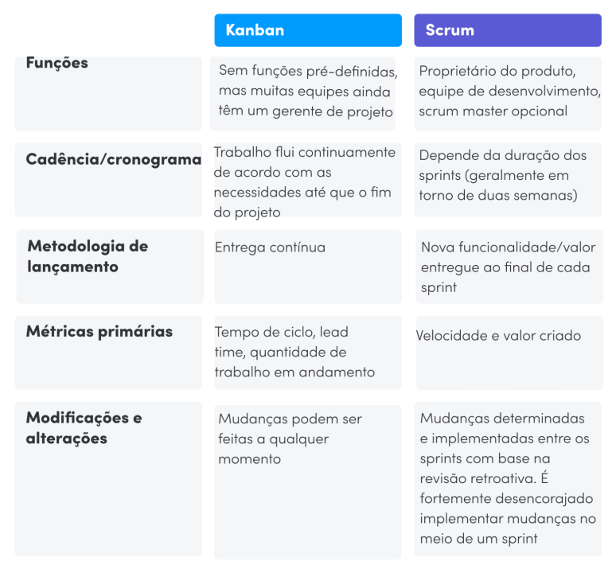

2ª Trilha: Diferenciais
A principal diferença entre a metodologia ágil e o Scrum reside em seus propósitos e escopos. A metodologia ágil é uma filosofia abrangente que busca resolver problemas de forma eficiente e flexível, priorizando a entrega contínua de valor em um curto espaço de tempo. Em contrapartida, o Scrum é uma estrutura específica dentro do universo ágil, projetada para organizar equipes e otimizar o desenvolvimento de produtos, permitindo entregas rápidas e iterativas.
